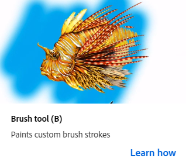
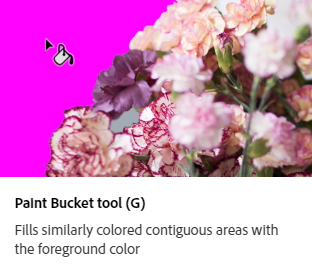
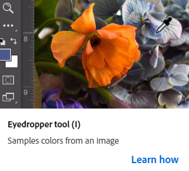
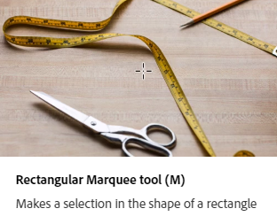
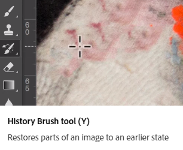
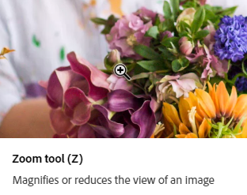
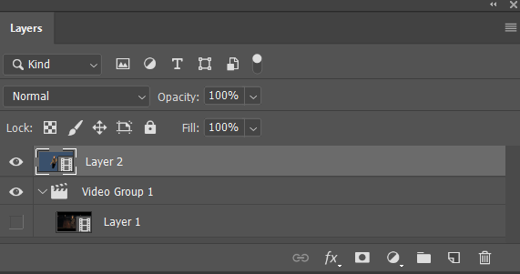
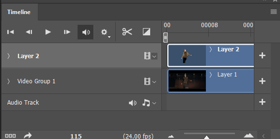
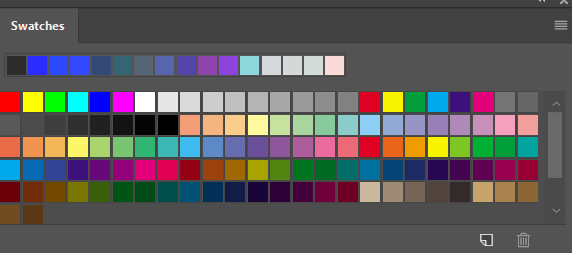

The full 1-minute animation project. Raw footage on the left, final rotoscoped and color-graded version on the right.
Each numbered take — raw footage next to the finished edit.
The tools and panels used for rotoscoping, cleanup, and color work.

🖌️';">The main painting tool. Used for hand-painting color, drawing lines, and touching up details frame by frame.

🪣';">Fills large areas with a single color. Used for quickly blocking in flat colors inside a selection.

💧';">Samples colors from anywhere on the canvas. Used for matching skin tones, shadows, and background colors accurately.

⬚';">Makes a selection in the shape of a rectangle. Used for cropping, copying, and isolating specific areas of a frame.

↺';">Restores previous parts of a frame without redoing everything. Useful for fixing small mistakes or recovering erased details.

🔍';">Zooms in and out of the canvas. Essential for pixel-level detail work during rotoscoping.

📚';">Organizes a project into stacked layers. Used to separate the background, character, and effects for easier editing.

🎞️';">Controls frame-by-frame animation. Used for scrubbing through frames, setting durations, and previewing the animation.

🎨';">Stores saved color palettes. Used to keep consistent colors throughout the entire animation.